A pocket-sized drink tracker for nights out. Log what you drink, watch your BAC live, and see the whole table's stats in real time.
Want to help test it? Drop your email and we'll ping you when open testing starts.
No spam. One email when testing opens, that's it.
Log a drink, see the line move. Widmark formula plus your body stats and stomach state, recalculated every second.
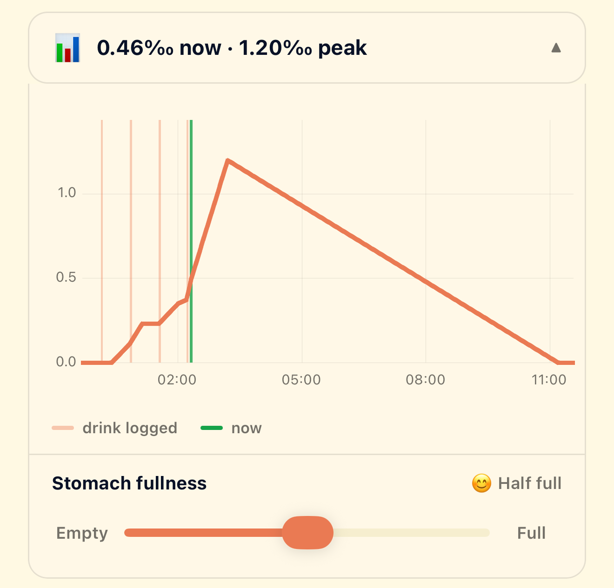
Beer, shots, wine, cocktails. Add anything in two taps, or backdate one you forgot to log earlier.
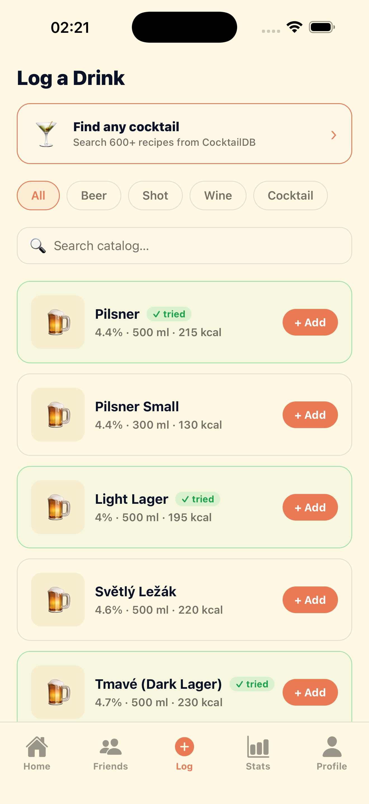
Every drink in the catalog tracked against your history. Watch your percentage tick up as you work your way through it.
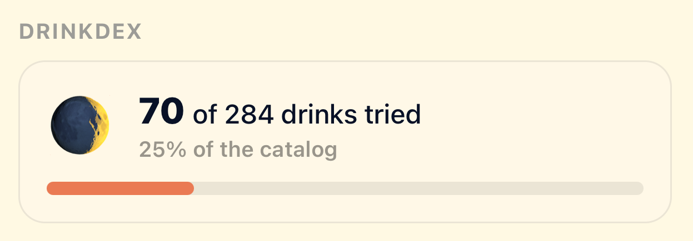
Units, calories, duration, peak BAC, sober-by time. Plus your goals, ticking down as you go.
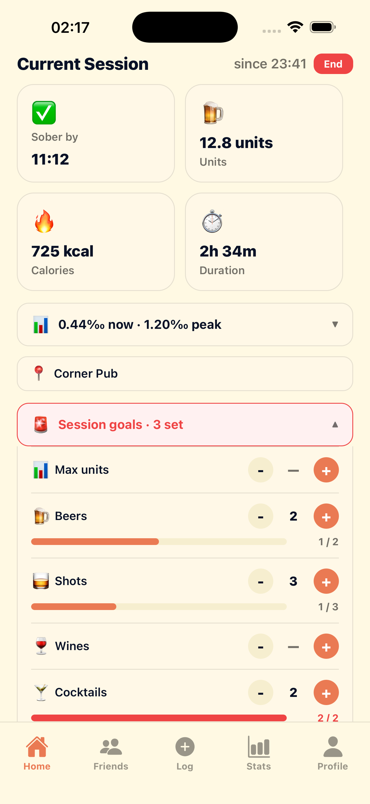
Weekly unit cap and per-category session goals, pre-loaded every time. Hit the limit, get a water-break nudge. Or skip it.
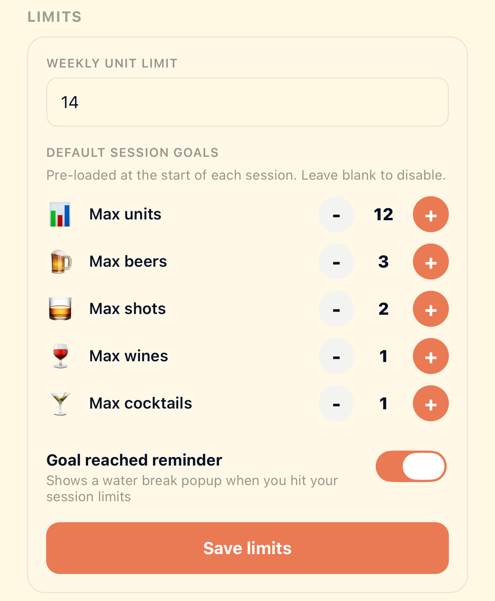
Start a session, ping your friends, and watch each other's drinks roll in live. Tap anyone to see their full BAC curve and timeline.
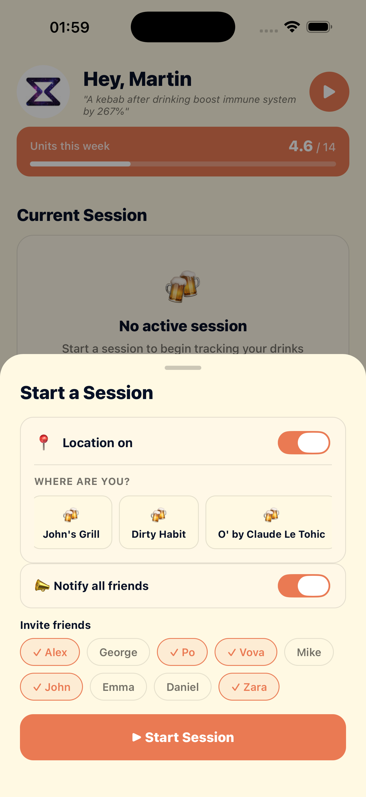
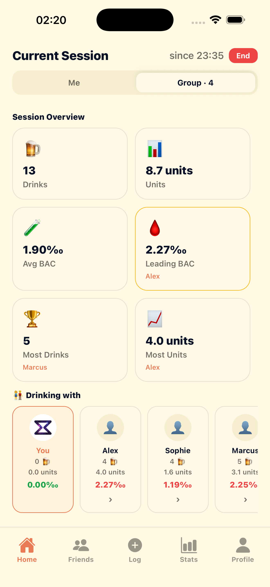
Friend codes for typing, QR for face-to-face. Tap any friend to see their lifetime records — total units, biggest day, favourite drink.
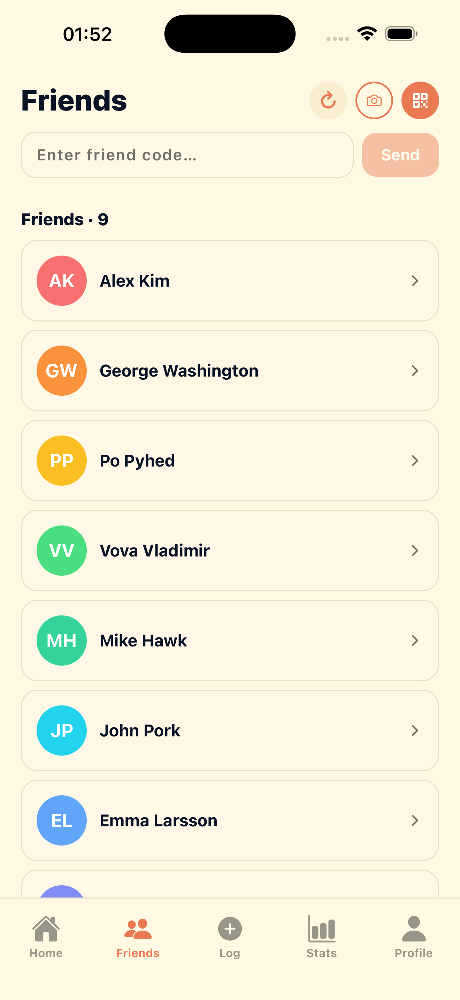
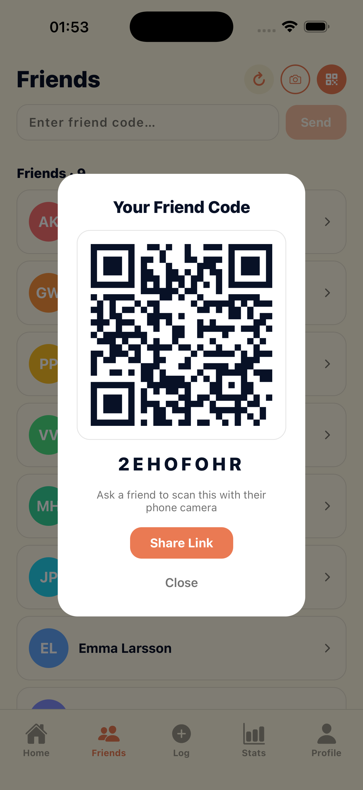
Total drinks, total units, sessions, biggest day, average per session, favourite drink. Pull up the receipts on any friend.
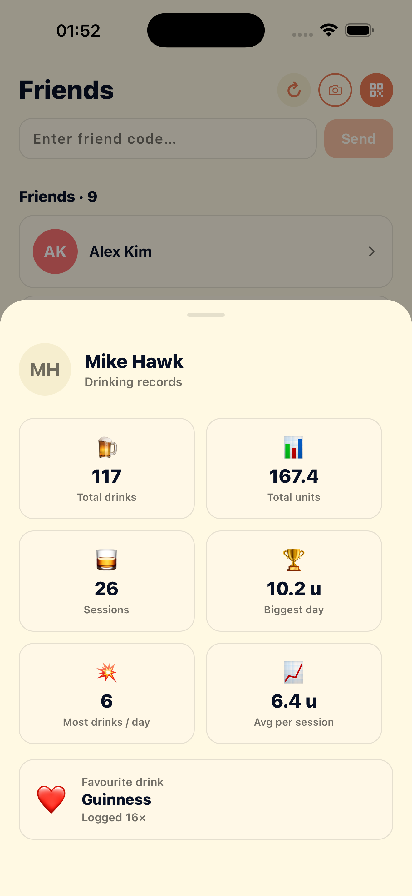
Biggest day. Longest sober streak. Total units logged. The kind of stats you can share at the pub or keep to yourself.
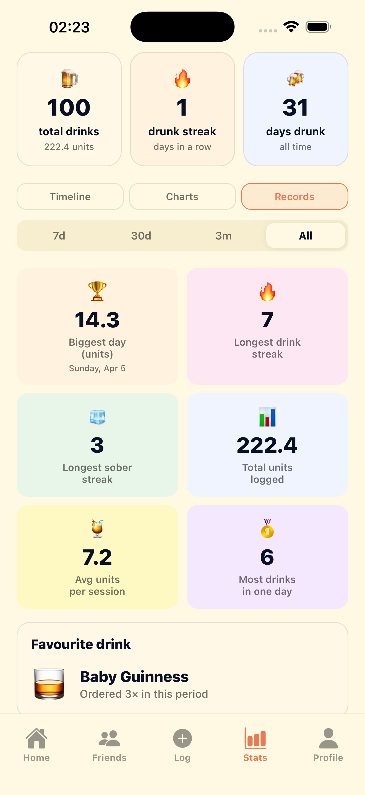
By category, by day of week, top drinks. The data doesn't moralize — it just shows up.
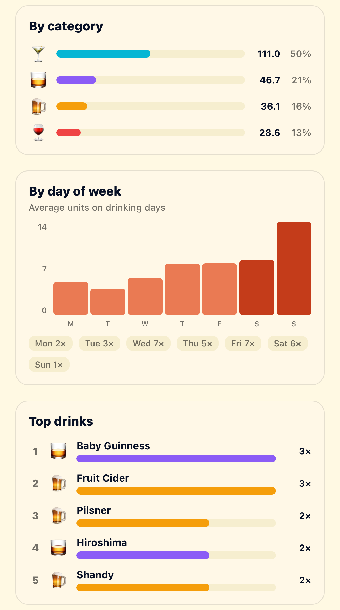